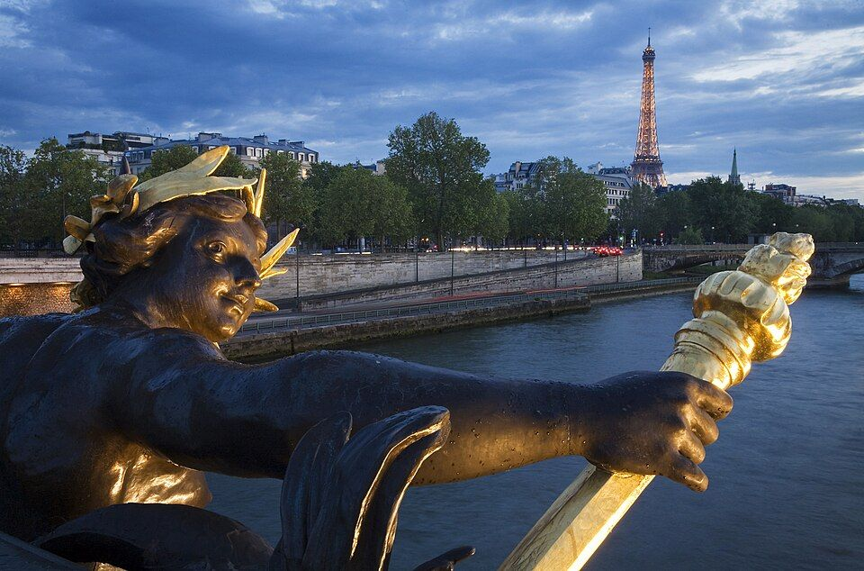

Paris, first stretch
Paris, France
- Getting here
- QR39 Doha → Paris CDG, lands 13:15, then immigration (EES queues) and RER B or taxi to the hotelFlight is booked for all four. The cost shown is only the airport transfer, about $90.
- Do
- 1.5 h · $0Exposure · Medium
- 1 h · $85Exposure · Low
- 1.5 h · $300Exposure · Medium
- 2 h · $100Exposure · Low
- 1 h · $70Exposure · Medium-high
- 1 h · FreeExposure · High
- Thu 10 Dec is a rest day after the flight; nothing is planned
- Weekdays are not automatically safe: 13 Oct (a Tuesday) had serious incidents, and 17 Oct was a Saturday. Check the news and the Paris police (préfecture) notices each morning
- Saturday 12 Dec keeps to the lowest-exposure sight (Eiffel); the Champs-Élysées and the Arc wait until Sunday and are the first to drop
- The 4-night stay lets the Annecy train leave on Mon 14 Dec after the strike notice ends
- Nights
- Cost
- Hours
- Risk
- Stay
- Family apartment or room in the 6th or 7th (shortlist below; Accor has nothing in the 6th or 7th)Estimate. Book a free-cancellation rate (confirm the exact terms for the dates). Avoid hotels around République, Magenta, Gare de l'Est and Nation.
⚑ Accommodation not booked. Check the cancellation terms before booking.